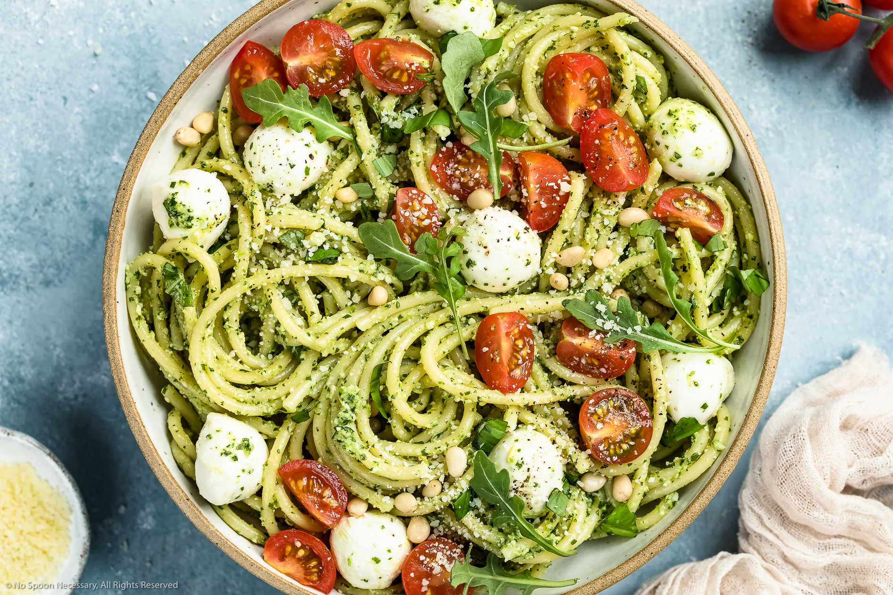

Lentils

Nesto's best dish for busy boys
Easy and low effort one pot pasta, with "alla genovese", tomatoes and mozzarella!
Ingriedients
- 500g Linguine
- 75g Pesto alla genovese
- 150g tomatoes
- 125g Mozzarella
- pepper & salt
Steps
- Heatup water for the noodles
- Cut the mozzarella and tomatoes into bite-sized pieces
- When the water reached its boiling point, put the noodles in the pot
- Boil the linguine to your preffered density
- Empty the water from the pot and mix everything in there